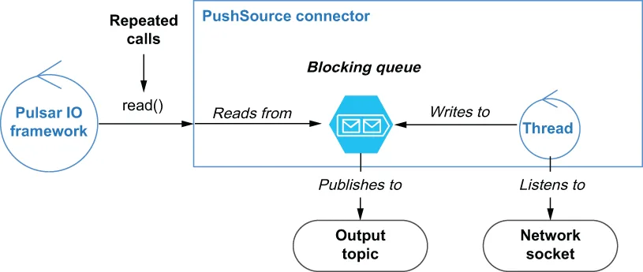

The second type of source connectors are those that operate on a push-based model. These connectors continuously gather data and buffer it inside an internal blocking queue for eventual delivery to Pulsar. As you can see from figure 5.4, PushSource connectors typically have a background thread running continuously that gathers information from the source system and buffers it inside an internal queue. When the Pulsar IO framework repeatedly calls the Source connector’s read() method, the data inside that internal queue is then published into Pulsar.
第二类 source 连接器是那些基于推送（push）模型运作的。这些连接器持续收集数据，并把它们缓冲在一个内部的阻塞队列中，等待最终投递给 Pulsar。正如你从图 5.4 中看到的，PushSource 连接器通常有一个持续运行的后台线程，它从源系统收集信息并把它缓冲进一个内部队列。当 Pulsar IO 框架反复调用 Source 连接器的 read() 方法时，该内部队列中的数据就会被发布到 Pulsar 中。

Figure 5.4 The PushSource connector’s has a background thread running that is listening to a network socket and pushing all the traffic it receives to a blocking queue. When the read() method is called, the data is pulled from the blocking queue.
图 5.4 PushSource 连接器有一个正在运行的后台线程，它监听一个网络套接字，并把收到的所有流量推送到一个阻塞队列中。当 read() 方法被调用时，数据就从该阻塞队列中被取出。
In this particular case, the connector has a background thread that is listening to all incoming traffic on a network socket and publishing it to the internal queue. This type of connector is particularly useful when you are consuming data from an external source that does not retain any information and can be periodically queried at any future point in time. A network socket is just such an example in that if the thread wasn’t connected and listening at all times, data sent over that network connection would be lost forever. Contrast this with the previous connector which queries a database. In that scenario, the connector can query the database after an order has been entered into the database and still retrieve the data because the database has retained it.
在这个特定的例子中，该连接器有一个后台线程，它监听某个网络套接字上的全部传入流量，并把它发布到内部队列中。当你从一个不保留任何信息、也无法在未来任意时间点被周期性查询的外部源消费数据时，这种类型的连接器尤其有用。网络套接字正是这样一个例子：如果该线程没有始终保持连接并监听，通过那条网络连接发送的数据就会永久丢失。把这一点与前面那个查询数据库的连接器对比一下。在那个场景中，连接器可以在一个订单被录入数据库之后再去查询该数据库，并且仍然能取回数据，因为数据库把它保留下来了。
The easiest way to create a push-based source connector is to write a Java class that extends the abstract org.apache.pulsar.io.core.PushSource class shown in the following listing. Since this class implements the Source interface, your class must provide an implementation of all the methods we discussed in the previous section.
创建一个基于推送的 source 连接器最简单的方式，是编写一个继承了下面清单中所示抽象类 org.apache.pulsar.io.core.PushSource 的 Java 类。由于这个类实现了 Source 接口，你的类必须为我们在上一节中讨论过的所有方法提供实现。
Listing 5.4 The PushSource class
package org.apache.pulsar.io.core;
/**
* Pulsar's Push Source interface. PushSource read data from
* external sources (database changes, twitter firehose, etc)
* and publish to a Pulsar topic. The reason its called Push is
* because PushSources get passed a consumer that they
* invoke whenever they have data to be published to Pulsar.
*/
public abstract class PushSource<T> implements Source<T> {
private LinkedBlockingQueue<Record<T>> queue;
private static final int DEFAULT_QUEUE_LENGTH = 1000;
public PushSource() {
this.queue = new LinkedBlockingQueue<>(this.getQueueLength()); ❶
}
@Override
public Record<T> read() throws Exception {
return queue.take(); ❷
}
/**
* Attach a consumer function to this Source. This is invoked by the
* implementation to pass messages whenever there is data to be
* pushed to Pulsar.
*
* @param record next message from source which should be sent to
* a Pulsar topic
*/
public void consume(Record<T> record) {
try {
queue.put(record); ❸
} catch (InterruptedException e) {
throw new RuntimeException(e);
}
}
/**
* Get length of the queue that records are push onto
* Users can override this method to customize the queue length
* @return queue length
*/
public int getQueueLength() {
return DEFAULT_QUEUE_LENGTH; ❹
}
}
❶ The BatchPushSource uses an internal blocking queue to buffer messages.
❶ BatchPushSource 使用一个内部阻塞队列来缓冲消息。
❷ Messages are read from the internal queue that blocks if no data is available.
❷ 消息从内部队列中读出；如果没有可用数据，该队列会阻塞。
❸ Incoming messages are stored in the internal queue that blocks if it is full.
❸ 传入的消息被存放在内部队列中；如果队列已满，它会阻塞。
❹ You must override this method if you want to increase the size of the internal queue.
❹ 如果你想增大内部队列的大小，就必须重写这个方法。
The key architectural feature of the PushSource is the LinkedBlockingQueue that is used to buffer messages before they are published to Pulsar. This queue allows you to have a continuously running process that listens for incoming data and publishes it to Pulsar. It is also worth noting that the internal queue can be constrained to the desired size, which allows you to limit the memory consumption of the PushSource connector. When the blocking queue reaches the configured size limit, no more records can be published to the queue. This will result in the background thread getting blocked, which could lead to data loss when the queue is full. Therefore, it is important to size the queue properly.
PushSource 的关键架构特性是那个 LinkedBlockingQueue，它被用来在消息被发布到 Pulsar 之前对它们进行缓冲。这个队列使你能够拥有一个持续运行的进程，负责监听传入的数据并把它发布到 Pulsar。同样值得注意的是，该内部队列可以被约束为你期望的大小，这使你能够限制 PushSource 连接器的内存消耗。当该阻塞队列达到配置的大小上限时，就无法再向队列中发布更多记录了。这会导致后台线程被阻塞，而在队列已满时可能造成数据丢失。因此，合理地设置队列大小是很重要的。